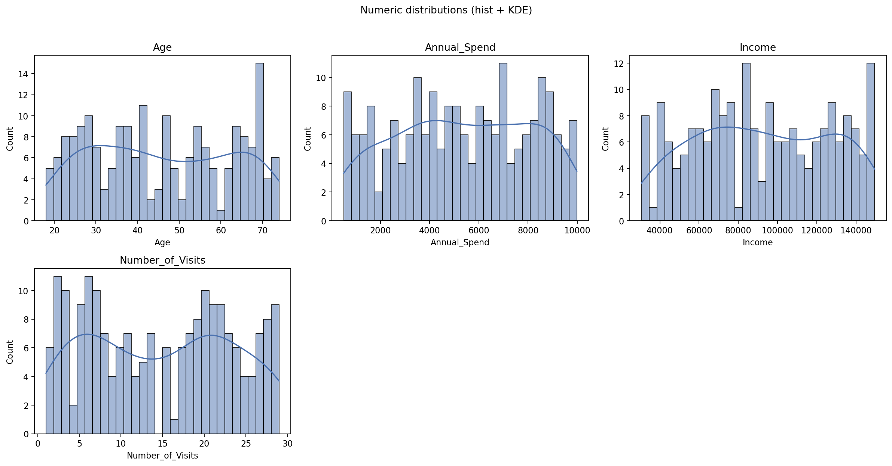
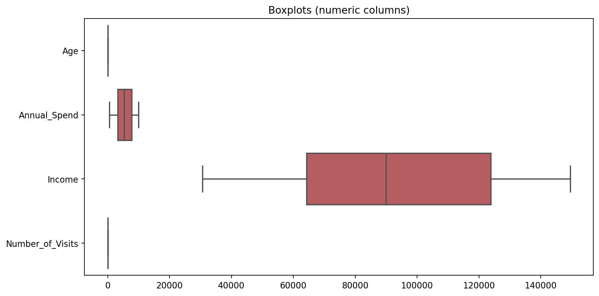
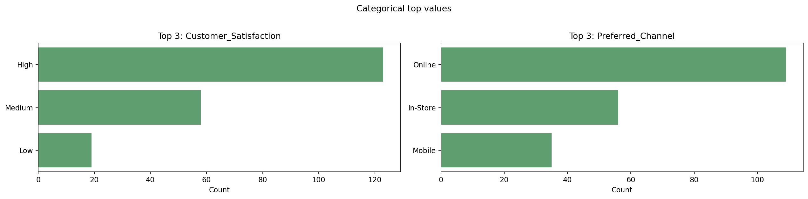
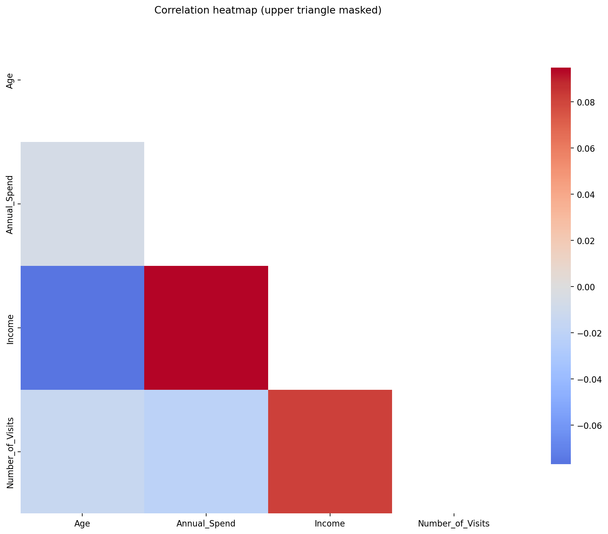
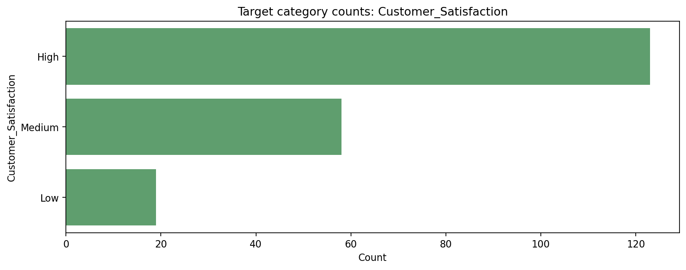
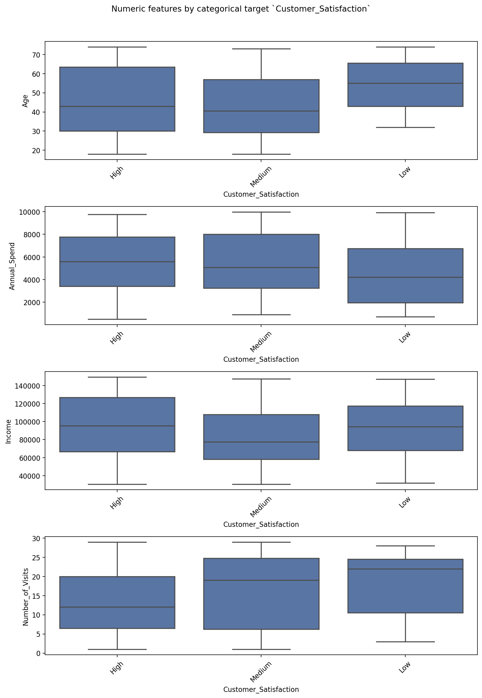

This report is generated by EDA LLM Assistant: exploratory analysis for tabular data, with explicit notes on which methods are used and how they are applied.
sales_and_customers.csv>) under each subsection.We build a data dictionary table for every column: dtype, distinct count, missing rate, an inferred meaning from name patterns (token heuristics, not domain truth), and whether the column is treated as a candidate independent variable or the configured target. You can override any column with
dictionary:in the YAML config (column name → definition).
| column | dtype | n_unique | missing_pct | in_analysis | meaning | role_in_eda |
|---|---|---|---|---|---|---|
| CustomerID | int64 | 200 | 0 | no | Inferred: likely Identifier (surrogate or business key) (from column name pattern). | excluded from analysis (identifier / manual) |
| Age | int64 | 55 | 0 | yes | Inferred: likely Age or aging-related measure (from column name pattern). | numeric (candidate independent) |
| Income | int64 | 199 | 0 | yes | Inferred: likely Monetary amount or income (from column name pattern). | numeric (candidate independent) |
| Annual_Spend | float64 | 200 | 0 | yes | Inferred: likely Monetary amount or income (from column name pattern). | numeric (candidate independent) |
| Number_of_Visits | int64 | 29 | 0 | yes | Inferred: likely Count or numeric quantity (from column name pattern). | numeric (candidate independent) |
| Preferred_Channel | object | 3 | 0 | yes | Inferred: likely Channel or source category (from column name pattern). | categorical (candidate independent) |
| Customer_Satisfaction | object | 3 | 0 | yes | Inferred: likely Score or satisfaction level (from column name pattern). | dependent (target) |
If inferred meanings are wrong, replace them in config under dictionary: or in your organization’s official data dictionary.
Column intelligence (heuristic). We label each loaded column with a semantic guess (money-like, count-like, high-cardinality text, etc.) using dtype, name tokens, and cardinality. Separately, on string columns we scan a sample for PII-like patterns (email, phone, SSN-shaped strings, Luhn-passing digit strings that may resemble payment cards). These are screening hints, not legal classification—expect false positives/negatives.
| column | in_analysis | semantic_guess | semantic_note | pii_risk_flags | pii_scan_note | n_unique | cardinality_ratio |
|---|---|---|---|---|---|---|---|
| CustomerID | no | surrogate_or_manual_excluded | Column excluded from analysis (often an ID). | none | 200 | 1 | |
| Age | yes | continuous_or_count_numeric | Generic numeric; inspect domain. | none | 55 | 0.275 | |
| Income | yes | monetary_like | Name suggests money; verify currency/units. | none | 199 | 0.995 | |
| Annual_Spend | yes | monetary_like | Name suggests money; verify currency/units. | none | 200 | 1 | |
| Number_of_Visits | yes | count_like_integer | Integer with count-like name. | none | 29 | 0.145 | |
| Preferred_Channel | yes | nominal_or_low_cardinality_categorical | Typical categorical / string labels. | none | 3 | 0.015 | |
| Customer_Satisfaction | yes | nominal_or_low_cardinality_categorical | Typical categorical / string labels. | none | 3 | 0.015 |
column_intelligence.csvMethod — excluding identifiers from analysis. Surrogate keys (e.g.
CustomerID,id,order_id) are usually not modeling features: they inflate numeric summaries, distort correlations/outliers, and leak train/test identity if misused. By default we drop columns that match ID-like name patterns before validation plots, correlations, IQR outliers, and distributional plots. They still appear in the data dictionary within_analysis = no. The configuredcolumns.targetis never auto-dropped. Disable withcolumns.auto_exclude_id_columns: falseor add explicit drops withexclude_from_analysis.
Excluded from statistical analysis (identifiers / manual): CustomerID
Approx. memory: 0.03 MB (pandas memory_usage(deep=True))
Sample export: sample_rows.csv
Method — numeric vs categorical vs datetime. We rely on pandas dtypes after load:
select_dtypesfor numeric (int,float), boolean,datetime64, and object/category strings. Columns listed undercolumns.datetime_columnsin the config are coerced withpandas.to_datetime(..., errors='coerce'), which parses valid dates and turns failures into missing (NaT).
| Role | Columns (count) | Names |
|---|---|---|
| Numeric | 4 | Age, Annual_Spend, Income, Number_of_Visits |
| Categorical (object/category) | 2 | Customer_Satisfaction, Preferred_Channel |
| Boolean | 0 | — |
| Datetime | 0 | — |
Dependent vs independent variables. The config marks
Customer_Satisfactionas the dependent (target) variable for supervised analysis. All other analyzed columns are treated as candidate independent variables (predictors / features). Causal interpretation still requires study design, not EDA alone.
Method — missing values. We count missing entries with
pandas.isna()on each column (treatsNaN/Noneand nullable types as missing). For each column we reportmissing_countandmissing_pct = missing_count / n_rows * 100. Bar and heatmap visuals help scan which columns and rows are affected.
No missing values detected.
Method — duplicate rows. We use
DataFrame.duplicated()with default settings (all columns, keep first occurrence as non-duplicate). The count is the number of rows that repeat an earlier row exactly.
Method — basic error / consistency checks (heuristic). We do not know your domain rules, so we flag:
These are starting points for manual or business validation, not automatic corrections.
No heuristic flags from the built-in checks (see methodology for limits).
Method — outliers (Tukey / IQR rule). For each numeric column we compute:
Any row where the value is below the lower fence or above the upper fence is counted as an IQR-based outlier for that column. If IQR is 0 (or undefined), we skip flagging for that column to avoid degenerate fences. This rule is descriptive, not a claim that those points are data entry errors.
| column | outlier_count | outlier_pct |
|---|---|---|
| Age | 0 | 0 |
| Annual_Spend | 0 | 0 |
| Income | 0 | 0 |
| Number_of_Visits | 0 | 0 |
Transformations. This report separates: (1) applied in this run — only what the pipeline actually changed (e.g. datetime coercion); (2) suggested — common next steps from skew, missingness, or cardinality (you choose whether to implement in modeling pipelines).
CustomerID.No generic transformation suggestions from heuristics, or dataset is small/simple.
Method — numeric summaries. For numeric columns we use
DataFrame.describe()with extra percentiles (e.g. 1%, 5%, 50%, 95%, 99%). That gives count, mean, std, min/max, and distribution quantiles. Skewness and kurtosis use the usual pandas.skew()and.kurtosis()on numeric columns.Plots — numeric. Histograms with KDE (
seaborn.histplot,kde=True) show shape and density. Horizontal boxplots summarize quartiles and show points beyond the whiskers (useful alongside the IQR counts above).
| column | mean | std | min | p50 | max |
|---|---|---|---|---|---|
| Age | 45.855 | 16.7324 | 18 | 45 | 74 |
| Annual_Spend | 5338.69 | 2743.75 | 504.2 | 5269.09 | 9984.84 |
| Income | 92201.7 | 34532.1 | 30591 | 90003.5 | 149489 |
| Number_of_Visits | 14.715 | 8.71571 | 1 | 15 | 29 |


Method — categorical top values. For object/category columns we compute
value_counts(including missing as its own bucket) and show the top N categories by frequency.Plots — categorical. Bar charts show the top categories per column (same logic as value_counts, limited to a max number of columns for readability).
Customer_Satisfaction| value | count |
|---|---|
| High | 123 |
| Medium | 58 |
| Low | 19 |
Preferred_Channel| value | count |
|---|---|
| Online | 109 |
| In-Store | 56 |
| Mobile | 35 |

Method — Pearson correlation. For numeric columns we compute the pairwise Pearson correlation matrix with
DataFrame.corr()(default methodpearson). Each entry is between −1 and 1: linear association, not causation. We flag pairs with absolute correlation ≥report.corr_thresholdas “high” for review.Plots — correlation. The heatmap shows the Pearson matrix; the upper triangle is masked so each pair appears once and the diagonal is easier to scan.
No pairs with |r| ≥ threshold (edit report.corr_threshold; current logic uses absolute Pearson r).

Supervised / target-driven EDA. With
columns.targetset, we add tables that relate the target to other features: for a numeric target, group summaries and Kruskal–Wallis tests vs categoricals (nonparametric, independent groups); for a categorical target, numeric summaries by target level and chi-square tests vs other categoricals (independence on contingency tables). Assumptions are stated with each test. High-cardinality categoricals are skipped for chi-square (configurable cap) to avoid unstable tables.
Target column: Customer_Satisfaction
Type (for this section): categorical
| Customer_Satisfaction | count |
|---|---|
| High | 123 |
| Medium | 58 |
| Low | 19 |

Age by target level| Customer_Satisfaction | count | mean | median | std |
|---|---|---|---|---|
| Low | 19 | 53.5263 | 55 | 13.8499 |
| High | 123 | 45.5935 | 43 | 17.1066 |
| Medium | 58 | 43.8966 | 40.5 | 16.336 |
Annual_Spend by target level| Customer_Satisfaction | count | mean | median | std |
|---|---|---|---|---|
| High | 123 | 5462.29 | 5585.44 | 2673.28 |
| Medium | 58 | 5325.66 | 5086.35 | 2780.7 |
| Low | 19 | 4578.32 | 4209.55 | 3096.79 |
Income by target level| Customer_Satisfaction | count | mean | median | std |
|---|---|---|---|---|
| High | 123 | 95488.5 | 95392 | 35543.9 |
| Low | 19 | 94261.9 | 94234 | 32118.2 |
| Medium | 58 | 84556.6 | 77442.5 | 32390.5 |
Number_of_Visits by target level| Customer_Satisfaction | count | mean | median | std |
|---|---|---|---|---|
| Low | 19 | 17.8947 | 22 | 8.66599 |
| Medium | 58 | 16.5172 | 19 | 9.44837 |
| High | 123 | 13.374 | 12 | 8.13553 |
Preferred_Channel
Pearson chi-square test of independence on contingency table. Assumes independent rows; expected counts should be ≥5 in most cells for asymptotic p-values to be reliable. High cardinality inflates chi² and power.

Other considerations. • Sampling: if
report.sample_rowsis set, plots use a random sample for speed; tables and validation use the full dataframe unless noted. • Correlation: Pearson assumes roughly linear relationships; for skewed or ordinal data consider Spearman or dedicated tests. • Causality: association in EDA does not imply cause. • Privacy: reports may contain sample rows; scrub sensitive columns before sharing.
Generated from a compact JSON summary of EDA tables, not from raw row-level data.
LLM summary enabled, but env var OPENAI_API_KEY is not set. Skipping LLM summary.
| Key | Value |
|---|---|
| generated_at_utc | 2026-03-26 16:35:38 UTC |
| python | 3.11.5 |
| pandas | 2.1.1 |
| numpy | 1.24.3 |
| matplotlib | 3.8.0 |
| seaborn | 0.12.2 |
| scipy | 1.11.3 |
| eda_llm_assistant | 0.1.0 |